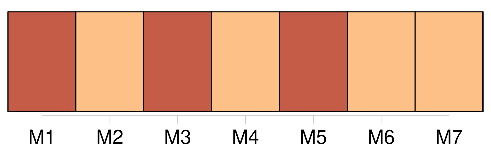

Longueur nb maillons : 74 mentions |
  |
À une heure, j'avais supplié le directeur de ne rien dire à [mon père] ; à quatre, je brûlais de [lui] raconter tout. [2 phrases]
Sachant que [mon père] ne se fâcherait pas, j'étais, somme toute, ravi qu' [il] connût ma prouesse. [1 phrases] [Mon père] voulait savoir si je n'avais pas forgé de toutes pièces ce roman d'amour. [Il] vint chez le directeur. Au cours de cette visite, [il] parla incidemment de ce qu' [il] croyait être une farce. [1 phrases] dit alors le directeur surpris et très ennuyé ; il [vous] a raconté cela??
Il m'avait supplié de me taire, disant que [vous] le tueriez. [3 phrases] Le malheureux ignorait ce que je savais déjà : [mon père] , choqué par sa conduite, avait décidé de me laisser finir mon année scolaire, et de me reprendre. [10 phrases] J'allais même dans le bateau de [mon père] , malgré [sa] défense ; mais je ne ramais pas, et sans m'avouer que ma peur n'était pas celle de [lui] désobéir, mais la peur tout court. [27 phrases] Au lieu de quitter la table où les grandes personnes s'attardent, ils y restent pour entendre [mon père] parler de départ. [35 phrases]
Je partis la mort dans l'âme, et priant Dieu que la bonne fût encore sur le toit, lorsque j'irais chercher [mon père] à la gare. [36 phrases] J'avais voulu rester avec [mon père] , tandis que ma mère, pour assouvir ce besoin de mal au cœur qu'ont les enfants, conduisait les siens au manège en montagnes russes. [6 phrases]
— Je crains tout de même que cela l'impressionne trop, dit -elle à [mon père] — Oh, répondit [-il] , personne n'est plus insensible. [1 phrases] [Mon père] disait cela pour que je restasse. Mais [il] savait que ce spectacle me bouleversait. Je sentais qu'il [le] bouleversait aussi. Je [lui] demandai de me prendre sur [ses] épaules pour mieux voir. [7 phrases]
Mais quand j'entendis des gens crier : « Elle vit encore », je tombai, sans connaissance, des épaules de [mon père] Revenu à moi, [il] m'entraîna au bord de la Marne. [7 phrases]
Tandis que ma tante parlait d'une amie, enfuie dès les premiers jours, après avoir enterré dans son jardin des pendules, des boîtes de sardines, je demandai à [mon père] le moyen d'emporter nos vieux livres ; c'est ce qu'il me coûtait le plus de perdre. [6 phrases] Je devais entrer au lycée Henri Iv ; mais [mon père] préféra me garder encore un an à la campagne. [26 phrases] La belle saison venue, [mon père] aimait à nous emmener, mes frères et moi, dans de longues promenades. [5 phrases] [Mon père] me dit que nous retrouverions à La Varenne des gens agréables, les Grangier. [24 phrases]
[Mon père] marchait derrière, entre les Grangier. [30 phrases] Mais, craignant ensuite que mon mensonge fût découvert, je la priai de n'en point parler à [mon père] [Il] ignorait, dis -je, que je manquais des cours de gymnastique pour me rendre à la Grande-Chaumière. [16 phrases]
Donc, seuls, ses parents et [mon père] m'empêchent de me pencher sur son cou et de l'embrasser. [11 phrases] [Mon père] n'y comprenait rien. [Il] me laissait toujours servir des apéritifs. Je tremblai qu' [il] me plaisantât sur ma sagesse.
[Il] le fit, mais à mots couverts, de façon que Marthe ne devinât pas que je buvais de la grenadine pour faire comme elle. [7 phrases] [Mon père] et mes frères s'étaient ennuyés, qu'importe!! [113 phrases] Quand je rentrai à la maison, je crus lire dans le regard de [mon père] qu' [il] avait déjà appris mon escapade.
Naturellement [il] ne savait rien ; comment eût [-il] pu le savoir? [14 phrases] Certes, je ne cherchais pas à faire de la peine à [mon père] ; pourtant, je souhaitais la chose qui pourrait [lui] en faire le plus. [5 phrases]
Il fallait l'apprendre à [mon père] , car [il] me saurait gré de le [lui] dire moi -même, avant la lettre du censeur, lettre trop grave à subtiliser. [1 phrases] Le lendemain, jour de congé, j'attendis que [mon père] fût à Paris pour prévenir ma mère. [4 phrases] Mon, amour puisant dans cette rencontre une mauvaise énergie, j'aurais pu, ensuite, lutter contre [mon père] ; tandis que l'orage éclatant après une journée de vide, de tristesse, je rentrai le front bas, comme il convenait. Je revins chez nous un peu après l'heure où je savais que [mon père] avait coutume d'y être. [Il] « savait » donc. Je me promenai dans le jardin, attendant que [mon père] me fît venir. [2 phrases]
Un de mes frères, assez excité par l'orage, me dit de me rendre dans la chambre où [mon père] s'était étendu. [2 phrases]
[Mon père] se taisait ; ensuite, sans aucune colère, avec une voix même plus douce que de coutume, [il] me dit : [3 phrases]
— Ce que [tu] m'ordonneras de faire. [1 phrases] [Je] t'ai toujours laissé agir comme tu voulais ; continue.
Sans doute auras -tu à cœur de [m'] en faire repentir. [1 phrases] [Mon père] ne me demandait même pas de larmes. Devant [sa] générosité, j'avais honte du présent et de l'avenir. Car je sentais que quoi que je [lui] dise, je mentirais. « Au moins que ce mensonge [le] réconforte, pensai -je, en attendant de [lui] être une source de nouvelles peines. [3 phrases]
Encore une fois, [mon père] ne dit pas non, à condition que je continuasse d'apprendre chez nous ce que j'aurais dû apprendre au collège, mais avec la liberté de peindre. [11 phrases]
» [1 phrases] [Il] me fit à ce sujet [sa] première scène, croyant que j'avais soustrait la lettre, que j'avais feint ensuite de [lui] annoncer gratuitement la nouvelle, que j'avais ainsi obtenu [son] indulgence. [2 phrases]
Aussi, [mon père] ne [comprit -il] rien lorsque, au début des vacances, nous reçûmes une lettre du proviseur. [1 phrases] La joie de donner enfin satisfaction à [mon père] comblait un peu le vide sentimental dans lequel je me trouvais car, si je croyais ne plus aimer Marthe, je la considérais du moins comme le seul amour qui eût été digne de moi. [127 phrases]
[Mon père] fit semblant de le croire. |

|
La ressource peut être téléchargée sur la page Ortolang
Si vous avez des questions ou vous voyez des erreurs, merci d'envoyer un mail à silvia.federzoni89@gmail.com
Site développé par S. Federzoni (contact)